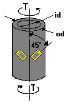
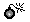

Applied Torque, T (0.000 to 500,000 lb in [0 to 56,490 Nm])
Applied Torque, T (0.000 to 500,000 lb in [0 to 56,490 Nm])Design Verification command
Design Considerations
To reduce the torque measuring range of the solid round shaft, it is usually preferable to produce a hollow-shaft design rather than simply making the solid shaft smaller in diameter. This is because at any given torque rating a hollow shaft will have increased bending strength over a solid shaft design. As with the round solid shaft, there is an absence of strain gradients.

Inputs (Allowed Range)
Applied Torque, T (0.000 to 500,000 lb in [0 to 56,490 Nm])
Pure torsion, free from axial or bending loads.
Inside Diameter, id (0.000 to 20 in [1.27 to 508 mm])
Round hole located on shaft centerline.
Outside Diameter, od (0.200 to 20 in [5.08 to 508 mm])
Round shaft of uniform diameter in the gage area.
Poisson's ratio (0.1 to 0.4)
For the material from which the shaft is constructed.
Modulus of Elasticity (5E+6 to +50E+6 psi [34.5 to 345 GPa])
For the material from which the shaft is constructed.
Gage Factor (1.0 to 5.0) The default value is 2.00.
From Engineering Data Form supplied with gages.
Calculated Values (Units)
 Pressing the COMPUTE BUTTON after entering the variables (within their acceptable ranges) calculates the following thwo output values:
Pressing the COMPUTE BUTTON after entering the variables (within their acceptable ranges) calculates the following thwo output values:
 Nominal Gage Strain (microstrain)
Nominal Gage Strain (microstrain)
The average of the absolute strains in the surface of the shaft under the gages. Ideally in the strain range of 1000 to 1700 microstrain at rated load.
Span at Applied Torque (mV/V)
Calculated output of a full-bridge circuit when the torque is equal to the value entered. The mV/V units are millivolts of Wheatstone bridge output per volt of bridge excitation.
Error Messages

"The Inside Diameter cannot be greater than or equal to the Outside Diameter."�The calculated nominal gage strain exceeds 1700 microstrain, which is considered to be the maximum strain level recommended for normal full scale transducer operation.�
A value of 1700 microstrain is considered to be the maximum strain level recommended for normal transducers. However, TransCalc will calculate the nominal gage strain until the value reaches 5000 microstrain.
�Design Impracticable. Gage strain exceeds 5000 microstrain�
No common transducer material will survive 5000 microstrain without an unacceptable amount of permanent zero offset. Accordingly, no calculations are made for bridge output. Adjust inputs so that nominal gage strain is less than 5000 microstrain.